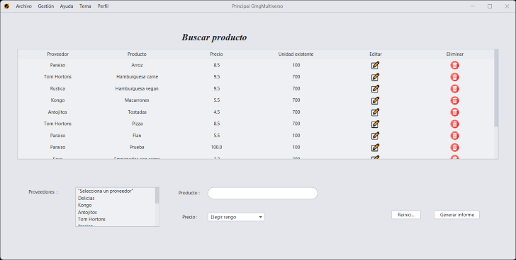
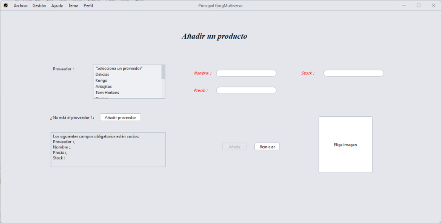

Buscar un producto
Para acceder a la sección de búsqueda de un producto, hay que pulsar en la sección "Gestión" en el menú superior, pulsar "Productos" y luego "Buscar".

Observaremos una tabla y 2 elementos por los cuales podremos filtrar, por nombre de un proveedor, por nombre de un producto y por rango de precios.
Además, se puede filtrar tanto por separado como en conjunto, es decir, puedes filtrar solo por proveedor o solo por producto o solo por precios, o filtrar primero por ejemplo por proveedor y luego por producto, te saldrá una búsqueda conjunta.
Eliminar / Editar un producto
Pulsando en la tabla el icono de una papelera se eliminará el producto.

Para editar un producto, solo tenemos que pulsar el icono de un lápiz para que se nos cargue la opción de editar del producto seleccionado.

Añadir un producto
Para acceder a la sección de añadir un producto, tenemos que pulsar en la sección "Gestión" en el menú superior, pulsar "Productos" y luego "Añadir".
Para poder añadir un producto, hay que rellenar todos los campos obligatorios.
GMG Multiverso